Safari
Safari In Africa, there are small antelopes that dash around swiftly and leap quite high. Due to their diminutive stature, they constantly play hide-and-seek within thickets. It is a necessity to evade the multitude of predators eager to claim them as prey. At the slightest hint of danger, those antelopes dive into the nearest bushes.
This article will tell you all about them. You will learn:
- What are the different duiker species?
- Their hiding spots and the reason for being called "divers."
- Unveiling their eating habits - are they strictly herbivores?
- Understanding the purpose of the black stripes beneath their eyes.
- Tips for raising a young duiker, even for beginners.
- Suggestions on where to spot these charming antelopes in the wild.
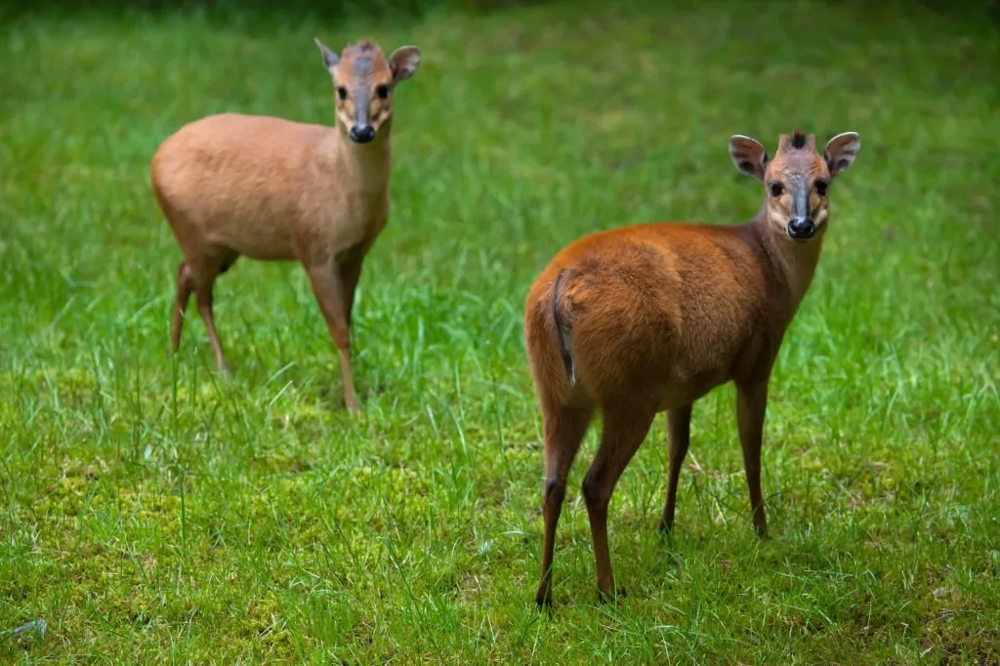
Who are duikers?
When we say the word "antelope," we usually picture a fairly large animal, reaching an adult's chest. The most recognizable, wildebeest antelopes, are comparable in height to cows. As we remember from another cartoon, "The Lion King," they could even trample an adult lion.
In general, antelopes encompass all horned animals that don't fit into the categories of large horned cattle, goats, and sheep. It's a diverse group of animals loosely grouped together. Perhaps that's why antelopes are so varied. No one even knows exactly how many antelope species exist. There are about a hundred of them in total, and different zoologists propose different classification systems. Most antelopes inhabit Africa. Interestingly, this continent is home to both the world's largest antelope — the eland — and the smallest — the dik-dik.
Common name: Giant Eland
Scientific name: Taurotragus derbianus
Class: Mammals
Continents: Africa
Lifespan: 20–25 years
Diet: Herbivorous
Height: 128 to 181 cm (4.20 to 5.94 ft)
Mass: 300–1200 kg
Conservation status: VU, Vulnerable
Demographic trend: Decreasing population
Common name: Kirk's Dik-Dik
Scientific name: Madoqua kirkii
Class: Mammals
Continents: Africa
Lifespan: 5–18 years
Diet: Herbivorous
Height: 30–40 cm (12–16 in)
Mass: 3–6 kg (6.6–13.2 pounds)
Conservation status: LC, Least Concern
Demographic trend: Stable population
Аntelopes grouped under the common name "duiker" are larger than dik-diks. In terms of body size, they rank second from the bottom, although this is somewhat subjective. Since duikers come in various species, their sizes also vary. The blue duiker is the smallest among duikers. Its height matches that of an average dik-dik—around 30–40 cm (12–16 in) at the shoulder. The weight of both antelopes is also comparable, starting from 3 kg (6.6 lbs) in adults.
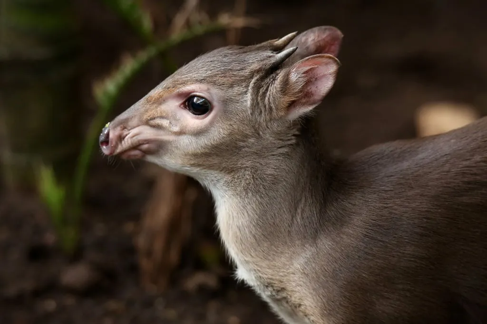
However, there's also the yellow-backed duiker. They reach a height of 80 cm (31 in) and weigh up to 80 kg (176 lbs). This makes it the largest among duikers. As you can see, the sizes of different species range within half a meter in shoulder height. What types of duikers exist, and what interesting facts are known about them and their lifestyles?
Why are they called "duikers"?
If you know Dutch or Afrikaans, you'll recognize a connection to diving in the word "duiker." Essentially, the Dutch word "duiker" translates to "diver, underwater swimmer, scuba diver" in English. In Afrikaans, which evolved from Dutch dialects during the colonial era, the term stuck. Thus, the link between the language of Northern European residents and the small antelope in Africa is explained.
As mentioned earlier, the shy antelope swiftly leaps and hides at the slightest danger in the nearest thicket, almost diving into it. This behavior was observed by early explorers of African fauna. So it became the name for the entire subfamily of horned animals.
In some languages, duikers are also referred to as "crested antelopes." Most species sport a comical crest of hair on the crown of their heads—a bunch of standing-up hairs.

Scientifically, the duiker belongs to the subfamily Cephalophinae. Sometimes they are grouped as Cephalophini in certain classifications. In both cases, the names trace back to "Cephalo-" meaning "head." Today, the classification of duikers is intricate and convoluted. So many original meanings embedded in their names are lost.
What duiker species are there?
Given the somewhat conditional definition of "antelope," learning about the confusion in the genera and species of duikers is not surprising. Different systems list varying numbers of duiker species, ranging from less than 20 to over 40. Classifications are dynamic, with some representatives shifting to adjacent genera, and others forming entirely new ones. In addition, as is common in modern zoology, some subspecies become independent species.
Now let's take a look at representatives of some duiker species. We'll admire their distinctive features, and learn the most interesting facts about them. Let's start with the smallest ones — blue duikers.
The blue duiker
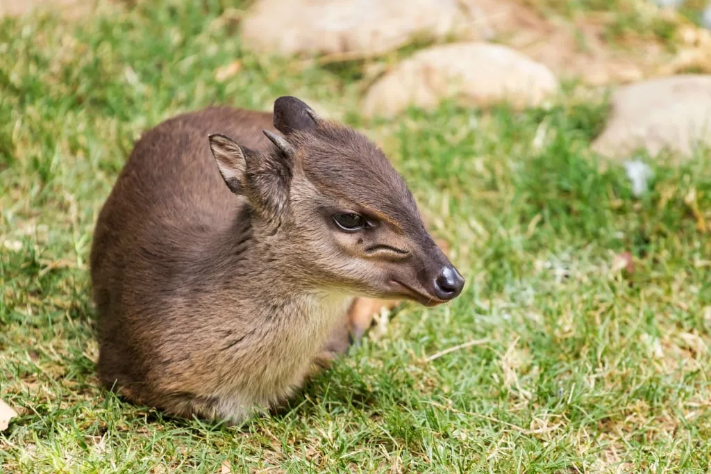
Common Name: Blue Duiker
Scientific Name: Philantomba monticola
Class: Mammals
Continents: Africa
Lifespan: 10–12 years
Diet: Herbivorous
Size: 32–41 cm (12.6–16.1 in)
Mass: 3.5–9 kg (7.7–19.8 lbs)
Conservation Status: LC, Least Concern
Demographic Trend: Decreasing population
In the forest, if you remain quiet and inconspicuous, you might spot these small antelopes nimbly darting from one fallen tree trunk to another. In clearings, they graze on fallen leaves, fruits, flowers, and bits of bark. However, a snap of a twig, and the antelope, crouching and leaping, vanishes instantly
These elusive creatures measure only 60–90 cm (23.6–35.4 in) from their short, agile tails to the tip of their noses. Their shoulder height never exceeds 40 cm (15.7 in). Often blue duikers are only around 30 cm (11.8 in) tall. They have small heads with short ears, large black eyes, and black stripes running from the eyes to the nose. These are scent glands producing aromatic substances. Duikers rub their faces on branches, leaves, and logs. This leaves behind an individual scent that signals to kin that they've entered a foreign territory.
The blue duikers' name is due to their coat looking grayish-brown with bluish tint in the forest shade. There are over a dozen subspecies of the blue duiker. They vary in coat color, generally ranging from gray to dark brown. Some can even have shades approaching entirely black.
If you think these typically 4–6 kg (8.8–13.2 lbs) creatures are entirely harmless, take note of their short horns. Both males and many female blue duikers have sharp horns measuring up to 5 centimeters (2 inches). In conflicts with other duikers or smaller predators, this antelope might use its horns to jab. If they add the strength of their hind legs behind the jab, it will certainly hurt!
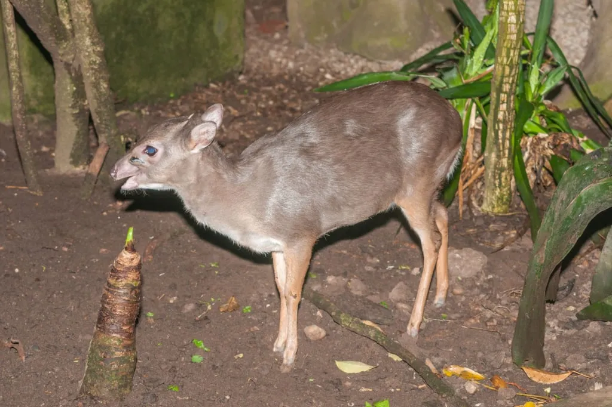
Diet of blue duikers
How do these animals find sustenance? During the day, they explore their territory, discovering not only flowers, leaves, and seeds but also mushrooms. Another way to find their favorite treats is by following the sounds of loud birds or noisy monkeys feeding high in the trees. The ground around them is sure to be scattered with fallen fruits, flowers, and fresh leaves. In this regard, the best allies of blue duikers are Cape parrots, baboons, and white-throated monkeys. The reason is that they all share a similar diet.
Habitat and lifespan of blue duikers
Where and how long do blue duikers live? In the wild, these antelopes typically live for 10–12 years. They are exclusively forest antelopes, which is reflected in their scientific name—Philantomba monticola. The second word here refers to the Latin montis, meaning "mountain." They inhabit forests of various types, including rain forests, with sightings recorded at altitudes up to 3000 meters above sea level.
Their range primarily spans central and western parts of sub-Saharan Africa. Extensive habitats of these forest duikers also exist in eastern and southern Africa. Surprisingly, the smallest duikers are widely distributed and claim the largest territories. In contrast, many larger duikers survive on a small territory and are classified as endangered due to habitat loss and other factors. According to the International Union for Conservation of Nature (IUCN), blue duikers face no significant threats. Generally, one of the most severe threats to duikers is human activity, including hunting. However, these antelopes are so small and swift that they are rarely hunted.
Researchers have observed another intriguing interaction between blue duikers and humans. These antelopes often come quite close to human dwellings. Due to their small size, they sometimes create nighttime resting places in woodpiles. However, when humans dismantle the woodpile, the animal loses its accustomed nighttime haven.
The natural enemies of the blue duiker include leopards, African golden cats, civets, hyenas, African wild dogs, monitor lizards, crocodiles, baboons, crowned eagles, and pythons. This list is not exhaustive, so the skittishness among the main traits of duikers is not without reason. They can hardly afford to roam freely as some of the larger herbivores.
Red-flanked duiker
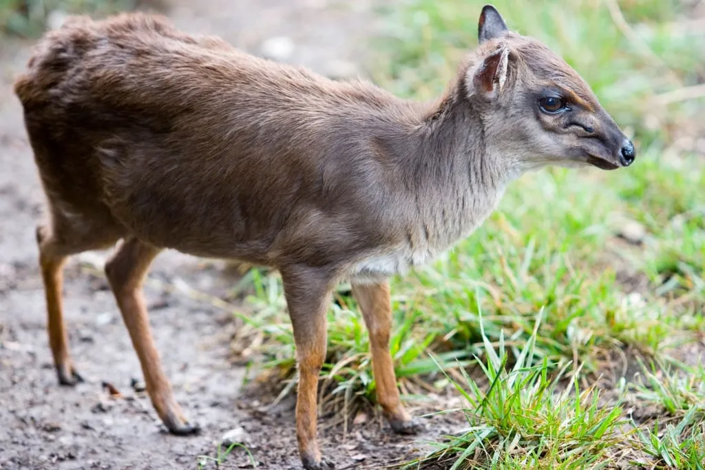
The red-flanked duiker, among the smallest duikers at an average height of 35 cm (13.8 in), closely resembles the blue duiker. Adult antelopes weigh between 12 and 14 kg (26.5-30.9 lbs). True to its name, the red-flanked duiker has orange-red fur, featuring a grey-black stripe from its head to the tail. The stripe extends over the muzzle, reaching the shiny black nose. The leg shins are also black, resembling the animal wearing socks. This characteristic is shared by many duiker species.
Male duikers grow horns up to a maximum of 9.5 cm (3.7 in). Horns in females, if present, are half that length. Similar to all Cephalophus species, these Cephalophus rufilatus duikers possess eye-pouch protuberances. These pouches, marked with black stripes, contain a preorbital gland secreting fluid for territory marking. Among all duiker species, the red-flanked duiker has the largest of these glands.
A distinctive trait of this species is its non-participation in social grooming. Although grooming is typical behavior in the Cephalophus genus, red-flanked duikers abstain from it.
Diet of red-flanked duiker
Their diet is akin to that of other duikers, consisting of leaves, fruits, flowers, shoots, and branches. Typically, they feed within a one-meter distance from the ground. Some duiker species reach higher areas by standing on their hind legs and leaning on tree trunks. These antelopes play a significant role in seed dispersal. They consume fruits like figs, wild plums, peaches, dates, and other fruit trees, spreading seeds via their digestive systems.
Habitats and lifespan of red-flanked duiker
Red-flanked duikers inhabit Central and West Africa. Their lifespan is around 5 years on average, although some may live up to 10 years. Predators such as leopards, eagles, and pythons pose threats, but humans remain the most perilous. Hunting for meat significantly impacts their population. Humans use nets and loud noises to trap the skittish animals. Despite population decline, their conservation status in the wild is considered of Least Concern. This is due to their ability to adapt to changing conditions and colonize new forest areas away from human deforestation zones.
Zanzibar Duiker
The Aders's duiker, is a unique African antelope that underwent taxonomic reevaluation in 2022. It was moved from the Cephalophus genus to a new, unique genus named Leucocephalophus. So it was renamed Leucocephalophus adersi. The prefix "leuco-" meaning "white" refers to the distinctive white stripe beneath the duiker's reddish-brown flanks, extending to its hind legs.
The common name and the second part of the scientific name honor W. Mansfield Aders. He was a biologist from Zanzibar who first provided a specimen of this new species for description. Found on the Zanzibar archipelago and two forested areas slightly north on the ocean coast of Kenya, it's semi-endemic to Zanzibar. Zanzibar is a group of islands in the Indian Ocean off the coast of East Africa, part of Tanzania.
Initially, this species was considered endangered. However, a new population was discovered in Kenya, leading to a conservation program for these animals. In the late 20th century, scientists counted only about 600 individuals. Today, the population is estimated at 14,000. Despite this increase, the Aders's duiker's status remains Vulnerable. As part of the conservation program, some antelopes from larger islands like Unguja and Pemba were relocated to smaller ones, such as Chumbe, Tumbatu, and Mnemba. Observers noted that this population was able to grow over time.
As part of the same program, the local blue duiker population is also being restored. We are talking about the population exclusive to the islands of Pemba, Unguja, and Mafia — the largest islands of Zanzibar
So what connects the Ader's duiker with representatives of other forest duikers? They inhabit mangrove thickets on the coast, have a red tuft of hair on their heads, and horns up to 6 cm (2.3 in) long. They lead a diurnal lifestyle, living alone or in groups of 2–3 individuals. Considered herbivores, they particularly enjoy berries and flowers. Forest duikers often supplement their diet with shoots, stems, and leaves. Monkeys, including Zanzibar red colobus and white-throated monkeys, help them find berries by feeding high in the trees and dropping fruits to the ground.
Data on sizes vary significantly. Most reports mention them as relatively small antelopes, within 32 cm (12.6 in) at the withers. Although there is information about individuals reaching 44 cm (17.3 in). The average weight of the Aders's duiker is 9 kg (19.8 lbs), with a maximum of 12 kg (26.4 lbs).
As we can see, apart from specific habitats and the distinctive feature of white fur, the Ader's duiker is a typical representative of this group of antelopes.
Zebra duiker
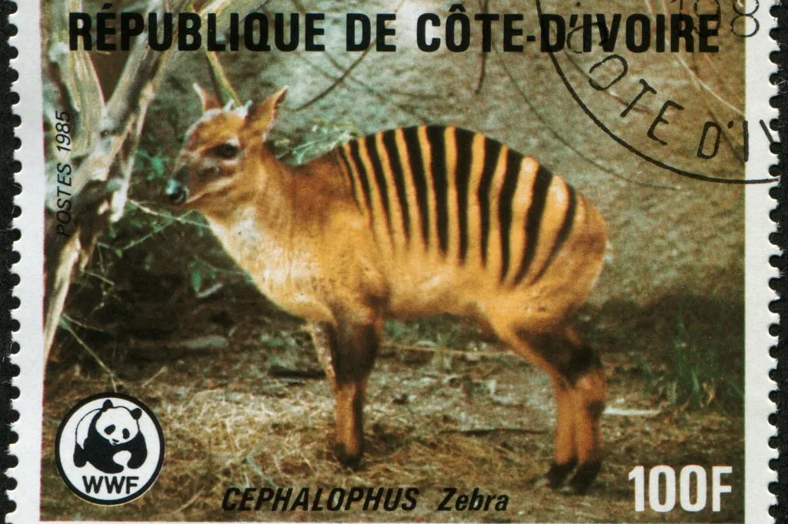
This is one of the most interesting duikers, distinctly different in appearance from all other species. On its light-orange back, it has many black stripes. This is why it is called so in all languages and even in the scientific community - Cephalophula zebra. It has 12 to 16 stripes.
This generic classification is controversial because most scientists traditionally classify this duiker under Cephalophus. The story here is the same as with the Aders's duiker. Due to significant differences, the zebra duiker was placed in a separate genus.
The average height of the zebra duiker at the withers is 45 cm (17.7 in), although some individuals can grow up to 50 cm (19.7 in). These animals weigh up to 20 kg (44 lbs). Like most duikers, females are usually larger than males. Same as with other duikers, not only the males can have horns. However, in males they are longer than in females, reaching a length of 5 cm (2 in).
These duikers can only be found in a small area - in a specific region of West Africa. They live in the lowland forests of Liberia, Guinea, Ivory Coast, and Sierra Leone.
Zebra duikers are herbivores - they feed on fruits, leaves, and shoots. Like other crested antelopes, zebra duikers follow monkeys, birds, and bats accidentally dropping fruits to the ground. Also, an interesting behavior has been observed in them. Thanks to the thickening of the frontal bone, zebra duikers can break the hard shells of fruits.
Unfortunately, the fragmented population of zebra duikers is decreasing. Fewer than 10,000 individuals remain today, and the species status is Vulnerable. It is even more painful to read the joyful reports of hunters proud of their killing of beautiful zebra duikers. Human activity poses the greatest threat to the species: hunting and deforestation.
Bay duiker
Their main body color is reddish-brown, hence the name. There is a noticeable black stripe running along the entire back, from the tail to the head, wider in males
These duikers grow up to 45-50 cm (17.7-19.7 in) in height, measured at the shoulders. They are larger than the zebra duikers and can reach a weight of 23 kg (50.7 lbs). Females, as usual, are slightly larger than males. Both sexes have horns but in males they are longer, reaching a maximum of 8 cm (3.1 in). The longest horns ever recorded reached a length of 12 cm (4.7 in). The ends of the duiker's horns are quite sharp.
Bay duikers live only in West Africa, in lowland tropical forests near the ocean coast. However, there is information that they also inhabit Central African countries. The reports say they inhabit fairly extensive areas, reaching the Great African Lakes. However, they refer to the Cephalophus castaneus, which was previously considered a subspecies of our Bay Duiker (Cephalophus dorsalis). Their ranges are separated by a very wide strip on the map. So, in new classifications, they are considered different species
The bay duiker is a nocturnal animal, preferring to rest in secluded places with dense vegetation during daylight hours. Like other antelopes, they eat fruit, preferring mango and jackfruit. The diet is supplemented with leaves, grass, buds, and shoots. However, it is known that bay duikers can also eat bird eggs, insects like termites and beetles, and even carrion, such as dead mongoose pups and hedgehogs. Moreover, cases of intentional hunting of small birds have been recorded. Interestingly, the antelope does not eat the wings and legs.
And who hunts these duikers? Of course, leopards, as well as eagles, owls, pythons, monitor lizards, and crocodiles. But again, the greatest threat comes from humans. Poaching and habitat destruction are the main threats to this species, which is close to a vulnerable position. It's crucial to address these threats to ensure the survival of these magnificent creatures in their natural habitats.
Bush duiker
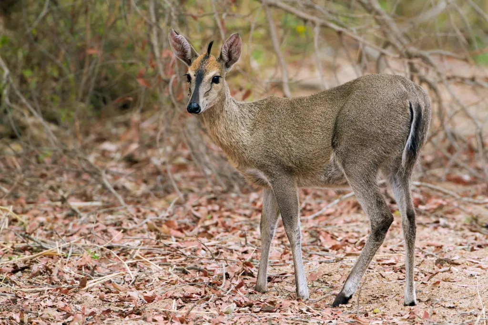
If we move from small duikers to larger ones, the next one worth taking a closer look at is the bush duiker (Sylvicapra grimmia). Many representatives of related species closely resemble each other, differing only in details of appearance and range. So, we wouldn't talk about each one here. For example, the blue duiker closely resembles Maxwell's duiker and Walter's duiker. In fact, these three all belong to the same genus. But our next duiker looks like no other.
The bush duiker earned its name for a reason. It is the only duiker that chooses open savannah spaces for living. It is content with bushes and tall grassy thickets to remain unnoticed. All other duikers are strictly forest dwellers preferring more dense cover. Another external difference of the bush duiker from all others is that, in a calm state, it holds its back straight. Whereas in other duikers, it is constantly arched.
The common duiker and the bush duiker are two names for the same duiker species. This is a very common antelope that can be found almost throughout Africa south of the Sahara.
Bush duikers live in open meadows and savannahs with low trees and bushes. They can also be found in hilly terrain and mountains where there are no dense forests. Interestingly, among all the hoofed creatures in Africa, bush duikers are known for inhabiting some of the highest altitudes. They have been spotted high in the mountains, where other antelopes do not venture.
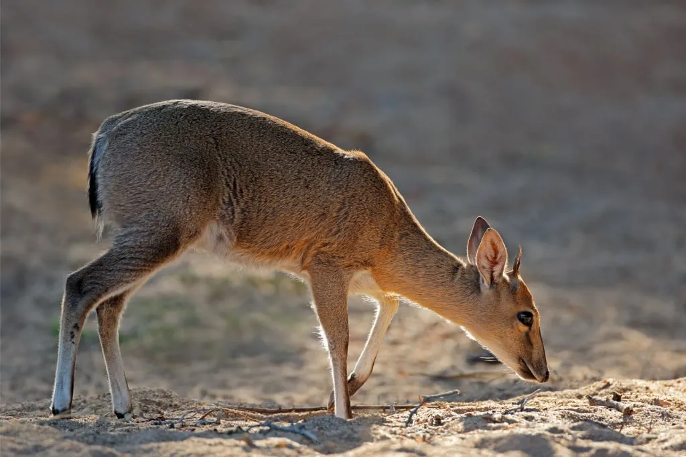
Bush duikers, on average, grow up to 50-60 cm (19.7-23.6 in). They weigh from 12 to 25 kilograms (26.4-55.1 lbs). Judging by their weight, these animals are already of predatory interest to humans. In addition to meat and skin, in Africa, the horns of these antelopes are used. People make decorations from them. In the past, pendants made from the horns of these animals were used as talismans.
All male bush duikers have horns. In females, this is a variable phenomenon, depending on the habitat. At the same time, the horns in females are shorter. The longest recorded horns of a common duiker reached 18 cm (7 in). On average, they are usually about 11 cm (4.3 in) long. There were findings of dead rock pythons whose stomachs were pierced by the sharp horns of common duikers they swallowed whole.
The bush duiker has many subspecies, so the fur color varies from light gray to dark gray, often with shades of brown. Interestingly, the color depends on the conditions in their habitats. In arid places, light gray shades prevail, and in wet ones, dark gray. There is also a quite logical pattern - the higher the duiker's habitat in the mountains, the longer its fur.
Bush duikers are predominantly nocturnal inhabitants, active during the dark hours, early in the morning, or late in the evening. During the day, they prefer to rest in safe lairs.
These duikers are considered omnivores. In addition to leaves and shoots, flowers, and fruits, they eat insects and other prey. For example, ants, caterpillars, as well as lizards, various rodents, and even birds. We know that blue duikers sometimes accidentally eat insects and bird eggs. However, bush duikers deliberately hunt for small animals, not hesitating even to scavenge.
What's also interesting is that bush duikers actively use their hooves to dig out tubers and roots from the ground, which they also like to feast on. People do not like them for this and consider them pests. Penetrating into agricultural land, duikers dig up potatoes, peanuts, and other crops.
Who else, besides humans, can threaten bush duikers? These include eagles, leopards, cheetahs, lions, jackals, crocodiles, and the mentioned pythons. If a duiker manages to hide from threats and quickly dive into the bushes in time, it can live up to 8-11 years. That is the natural lifespan of a bush duiker in the wild.
In captivity or an artificially safe environment, like other animals, common duikers live longer, reaching up to 14 years. We at Angelino rescued an orphaned baby bush duiker. We raised and released it into partially wild spaces. We hope that she will live a long and fulfilling life.
In 2022, quite unexpectedly for us, a little antelope, still a baby, came under our care. The locals brought her to the Angelino Adventures office at the Aishi Machame Hotel. We had to study a lot about the needs of bush duikers to avoid harm and prepare her for independent living. It took several months.
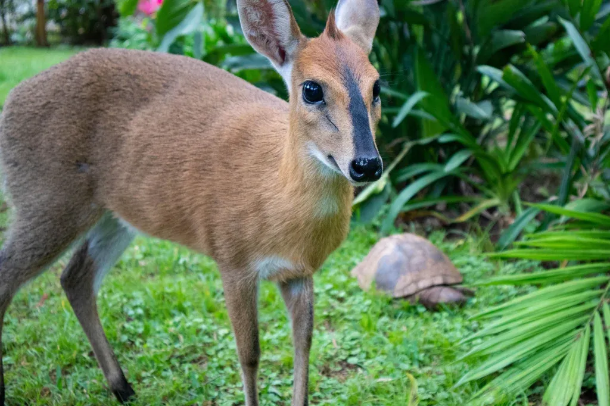
Read the full story of our little Nyasi, the bush duiker from Tanzania, in our blog. There are many photos and fascinating details about the growing up of the common duiker.
The Tanzanian duiker (Abbott's duiker)
Moving on, it's time to take a brief look at the duiker which in some languages such as Bulgarian and Russian is commonly referred to as the Tanzanian duiker. This is justified by the fact that the animal is an endemic species of Tanzania. It inhabits only a few scattered mountainous zones in the country.
The scientific name of this duiker is Cephalophus spadix. In English and German-speaking environments, the name Abbott's duiker is more prevalent. It honors the remarkable American naturalist William Louis Abbott. In the 1880s, he traveled through what was then and even climbed Mount Kilimanjaro. It was there that he discovered this new species of antelope.
It may seem that more than a hundred years have passed, but we still know relatively little about this duiker. For instance, its first photograph surfaced in 2003, and the results of the initial genetic studies on Tanzanian duikers emerged only in 2014. The species has been classified as endangered. Abbott's duikers are dwindling, with only about 1500 remaining. They face threats from hunting, as traps are set for them. Another significant threat is logging in their habitats.
Abbott's duikers inhabit only five locations in Tanzania: Mount Kilimanjaro, the Southern Highlands, the West Usambara Mountains, Rubeho, and the Udzungwa Mountains. The latter location harbors the largest population of this species. In all these regions, they live in high-altitude forested areas, ranging from 1300 to 2800 meters (4265 to 9186 feet) above sea level. There are reports that they occasionally ascend to 4000 meters (13123 feet). They have also been spotted in low-lying forests at an altitude of 300 meters (984 feet) above sea level.
On average, Abbot's duikers grow to about 65 centimeters (25.6 inches) at the shoulder. However, individuals as tall as 74 cm (29.1 inches) are known. They weigh approximately 55–60 kilograms (121.3–132.3 pounds). They have short brown fur ranging from walnut to dark brown shades. These antelopes are easily distinguished from all other duikers by their elongated muzzle. They have a large crest of red or even bright orange color on their heads. Descriptions of the animal are almost exclusively based on camera trap footage placed in dense mountainous forests.
Abbot's duikers are considered one of the most elusive species of duikers and certainly the rarest. Even researchers rarely encounter them in their natural environments. They lead a nocturnal lifestyle, which complicates observation.
It is known that Abbot's duikers feed not only on flowers, grasses, mosses, and fruits but also on small animals like frogs. In turn, they are hunted by leopards, pythons, crowned eagles, and in the Udzungwa Mountains, by lions and spotted hyenas. There have been reports of cases where, in self-defense, they transitioned from fleeing to aggressive defense, even killing pursuing domestic dogs. Presumably, these are small-sized dogs, as in Tanzania there are few large dogs.
Very little is known about the social life, reproduction, and other aspects of Abbott's duikers. This antelope remains a mysterious creature, generating significant interest among scientists.
In Tanzania, since 2002, a program has been in place to protect this endangered species. The habitats are studied, population numbers are counted, forest corridors are protected, allowing mountain antelopes to expand their range. Traps set by poachers are removed. Lectures and other events involving the local population are conducted to raise awareness about these animals and engage young Tanzanians in the conservation effort.
In Swahili, the official language of Tanzania, this species of antelope is called minde. Wildlife clubs for children called Minde Wildlife Clubs have been established. Conservationists in Tanzania actively involve children in educational programs because this method is the most effective. Children not only acquire information themselves but also relay it to older relatives at home.
Let's hope that the measures being taken will preserve the population of these wonderful Tanzanian duikers.
Jentink's duiker
In most Western languages, this antelope is known as the Jentink's duiker, named after the Dutch zoologist Fredericus Jentink. This name (Cephalophus jentinki) was assigned to the antelope by the prolific British zoologist Thomas Oldfield. Oldfield dedicated his life to the systematization of mammals and described over 2000 new species and subspecies.
Now we are moving on to the largest representatives of duikers. The Jentink's duiker can grow up to 80 cm (31.5 inches), weighing nearly 80 kilograms (176 pounds). This species is considered one of the last large mammals discovered in Africa in the late 19th century.
This antelope has a robust body and relatively long horns, reaching 21 centimeters (8.3 inches). The Jentink's duiker has a distinctive coloration — most of its body is gray as if with a silver sheen, while the head is dark gray or almost black. The head and torso are separated by a white stripe that runs across the shoulders and descends along the front legs. It looks like a blanket lying on its back, similar to a horse's saddle.
The antelope is active at night, which is one reason why it's rarely encountered in the forest. For instance, it took half a century after the discovery of the first females of this duiker species in the late 19th century before scientists found a male skull to study.
The Jentink's duiker enjoys fruits, especially parinari and kola nuts. It has strong teeth, allowing it to crack the hard shells of some fruits to obtain the treat. There is no information about whether it feeds on birds and small mammals since these duikers are very elusive.
They live in some lowland forests of West Africa. Unfortunately, they are hunted by local residents for meat and by tourist hunters. This is common, for example, in Liberia, where commercial hunting thrives, and there are no laws protecting animals from human encroachment. The Jentink's duiker is a rare animal, making it a coveted trophy for hunters from around the world.
In the wild, there are only about 2000 of them left. The species is considered Endangered. Besides humans, they face threats from leopards, pythons, servals, jackals, predatory birds, and African civets.
Yellow-backed duiker
Common Name: Yellow-backed duiker
Scientific Name: Cephalophus silvicultor
Class: Mammals
Continents: Africa
Lifespan: 10–12 years
Diet: Herbivorous
Height: 70–80 cm (27.6–31.5 inches)
Weight: 45–80 kg (99–176 pounds)
Conservation Status: NT, Near Threatened
Demographic Trend: Decreasing population
By general consensus, this duiker species is the largest of them all. It weighs up to 80 kilograms (176.4 pounds) and reaches 80 centimeters (31.5 inches) at the shoulder. Moreover, it has the largest brain relative to body size among all antelopes.
These massive antelopes have a dark gray-brown shade with a distinctive yellow-brown spot on the lower back. It has a triangular shape and descends towards the tail. Both males and females have horns, ranging from 8.5 to 21 centimeters (3.3 to 8.3 inches) in length.
Yellow-backed duikers can be found in the vast expanses of Central Africa, as well as in the western part of the continent. They consider dense forests as their home. Among trees and bushes, they easily hide from predators and other threats.
These duikers are hunted by hyena-like dogs, leopards, and lions, often falling victim to local hunters as well. Due to their large size, they attract people who hunt for meat. For the same reason, they need a lot of food themselves, constantly foraging both day and night.
These antelopes love fruits, as well as leaves, shoots, seeds, buds, and even bark. Their powerful teeth are adapted for grinding tough bark and roots. Using their hooves and muzzles, duikers dig the ground in search of food. Sometimes, they kill and eat birds.
Interestingly, yellow-backed duikers compete with Jentink's duikers for territory. Due to their similar sizes, it's impossible to predict who will win in a confrontation. Yellow-backed duikers have been observed with broken horns, indicating participation in fights.
According to the International Union for Conservation of Nature (IUCN) classification, the yellow-backed duiker (Cephalophus silvicultor) is Near Threatened. The latest estimates at the end of the last century suggest that there were 160,000 individuals. However, the population may rapidly decline due to the increasing demand for meat from the local population. Along with deforestation, this poses a serious threat to the species.
The lifestyle of duikers
We have described 9 species of duikers, and there are a total of four times more. As you can see, despite differences, including in size and coloration, they have a lot in common. Let's try to summarize the knowledge about duikers by answering the main questions about how these African antelopes look and live.
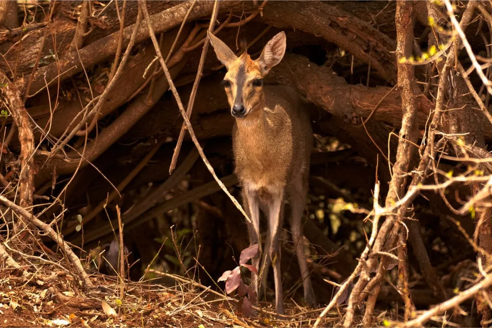
Where do duikers live?
All duikers exclusively inhabit Africa south of the Sahara. Some species live on islands to the east of the continent.
They are predominantly forest species, except for one species aptly named the bush duiker. Bushes and tree thickets not only provide these animals with necessary food but also protect them from predators. In times of danger, duikers quickly and skillfully leap, hiding in the thickets, sometimes emitting a piercing cry. Some duiker species choose lowland forests. Others prefer to settle in highland forests, including the flore-rich zones of Africa's highest mountain, Kilimanjaro. Species like the black-fronted duiker are frequently recorded near marshes or rivers.
What do duikers look like?
Duikers are small antelopes, with a shoulder height not exceeding 80 cm (31.5 in). The smallest ones grow only up to 30 cm (11.8 in). The color of their fur varies from cream to dark brown, almost black. Red, russet, gray, and white shades are also present in their coloration.
The backs of forest duikers are arched even at rest. Only the bush duiker, living in open savannah spaces, keeps its back straight. The thin long legs of some species are colored black, giving the impression of wearing high stockings. Both males and many females have horns, though the females' horns are shorter.
All duikers share two distinctive features:
- A tuft of hair on the head between the horns
- Preorbital glands that secrete a substance and are marked by black stripes running under the eyes toward the nose.
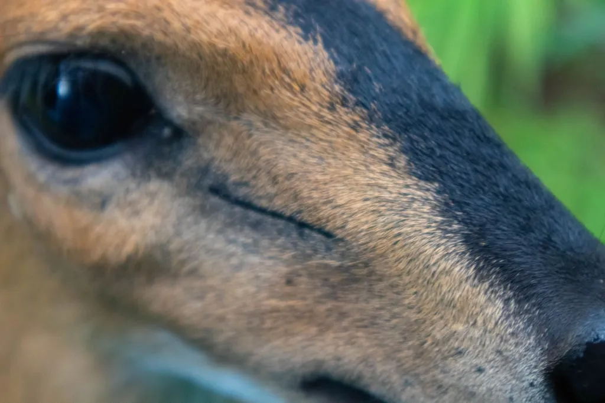
Duikers also have glands between their split hooves. They mark their territory with the secretions when rubbing their muzzles against branches and tree trunks. They also use excrement left on the borders of their territories for the same purpose.
How do duikers interact with each other?
These are solitary animals that do not allow intruders into their territory. When encountering individuals of the same species, the duiker will defend its territory. An exception is made during the breeding period when a male and female temporarily form monogamous pairs. Group formation with 2–3 individuals is also possible.
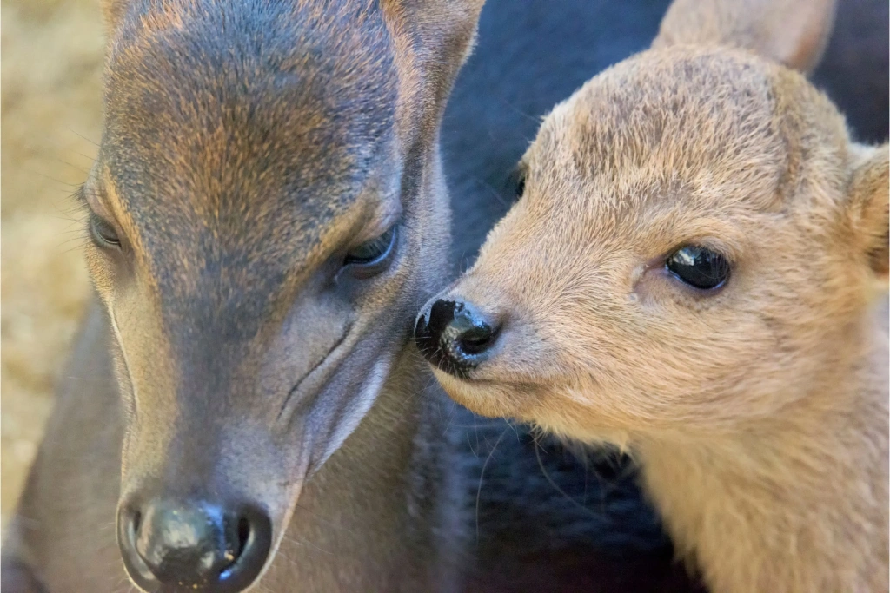
In cases where representatives of different duiker species coexist in one forest but are approximately the same size, they peacefully divide the territory, choosing different habitats and different times of activity. Some species are active during the day, while others are active at night. An exception is the yellow-backed duiker, which is active both day and night.
What do duikers eat?
Duiker antelopes are primarily herbivores. They feed on leaves, grass, shoots, flowers, seeds, buds, mushrooms, and fallen fruits. They find food on the ground or at a low height reachable with their mouths.
Interestingly, duikers follow birds, bats, and monkeys feeding in the upper parts of trees. They benefit from the fruits accidentally dropped to the ground by these animals. During the rainy seasons, many duikers frequently do not need drinking water, instead obtaining all fluids from fruit and plants.
There is evidence for many duiker species suggesting that these antelopes can also be carnivorous. Apart from the occasional consumption of insects and bird eggs, they sometimes hunt for small birds, frogs, and rodents. Some duikers have been observed eating carrion.
Who hunts duikers?
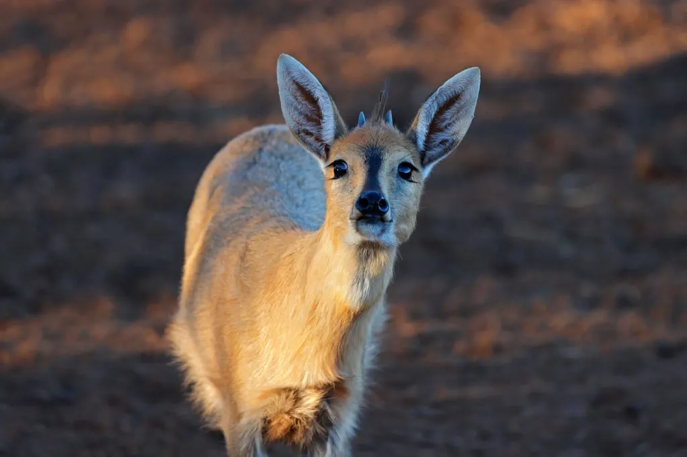
The main enemy of these antelopes is humans. Representatives of larger species suffer especially due to the possibility of supplying meat to people. All species lose their habitats due to deforestation, the expansion of agricultural land, and creeping urbanization.
Natural enemies for duikers include leopards and other felines, pythons, monitor lizards, crocodiles, jackals, African wild dogs, monkeys, and birds of prey.
Where to see duikers in their natural habitat?
You can get to know and observe these small antelopes on safari. You are almost guaranteed to encounter the bush duiker in any of Tanzania's national parks by joining a tour with Angelino Adventures.
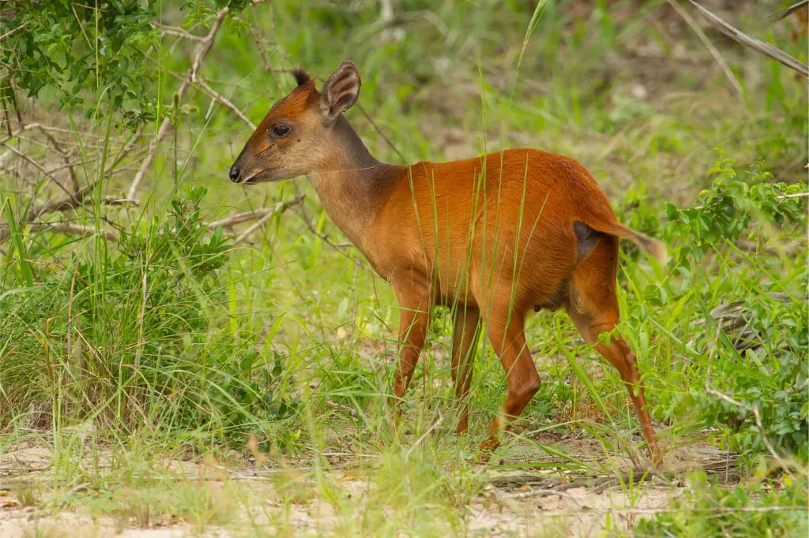
By the way, we have an interesting tradition – we name our safari programs after different antelopes. All programs 'include' African antelopes from the tiny dik-dik to the huge eland. The longer and more interesting the program, the larger the antelope it is named after.
There is also a wonderful safari program called 'Duiker'. It includes a visit to Lake Manyara Park and the Ngorongoro Conservation Area, one of the best places in Tanzania where you will see many animals in a short time. It is quite likely that you will also encounter the common duiker. However, we do not limit you to a two-day tour; you can choose any. Strive to explore the wild nature of Africa through your own experience – it's very interesting!
All content on Angelino Adventures is created with expert insights and thorough research, in line with our Editorial Policy.


Want to know more about Tanzania adventures?
Get in touch with our team! We've explored all the top destinations across Tanzania. Our Kilimanjaro-based adventure consultants are ready to share tips and help you plan your unforgettable journey.
 Tanzania Safaris
Tanzania Safaris
 Kilimanjaro and other mountains
Kilimanjaro and other mountains
 About Angelino Adventures
About Angelino Adventures
 Tanzania Islands
Tanzania Islands